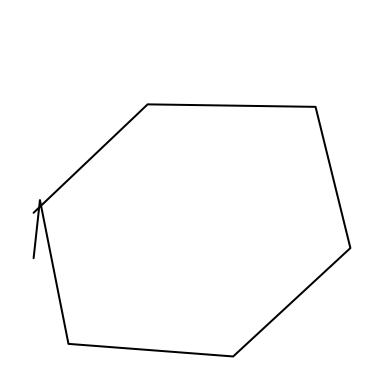
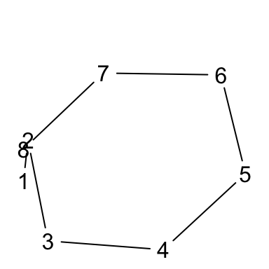
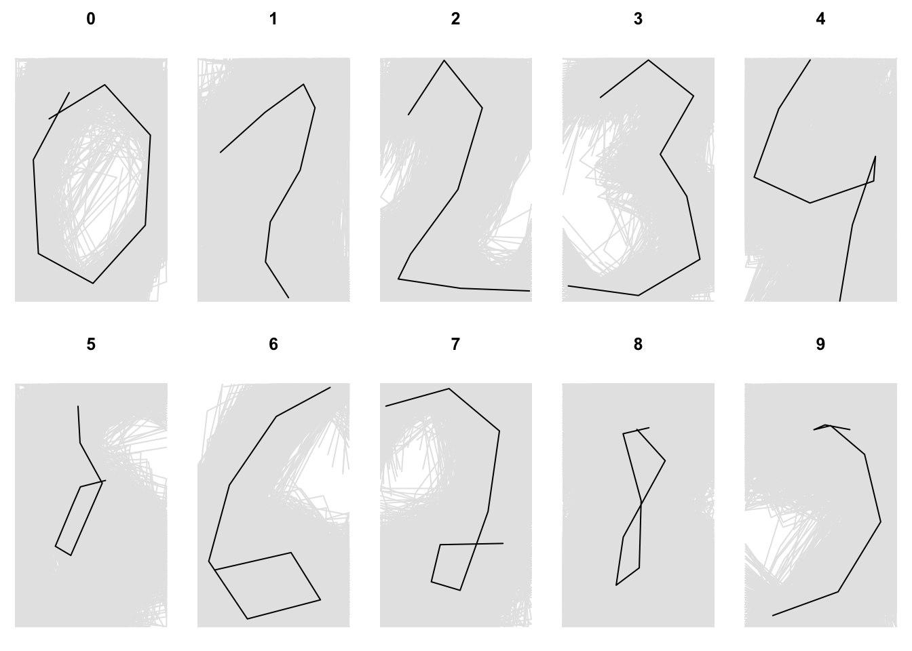
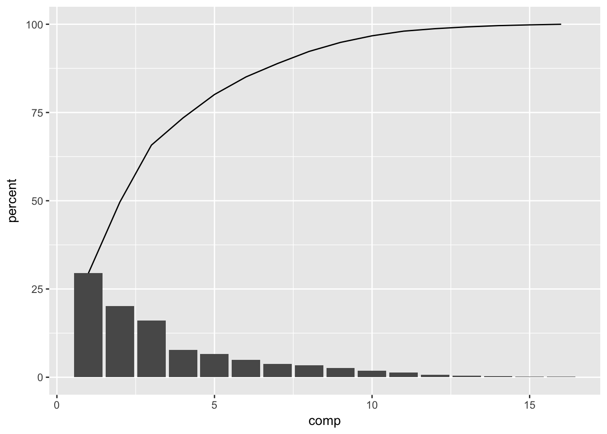
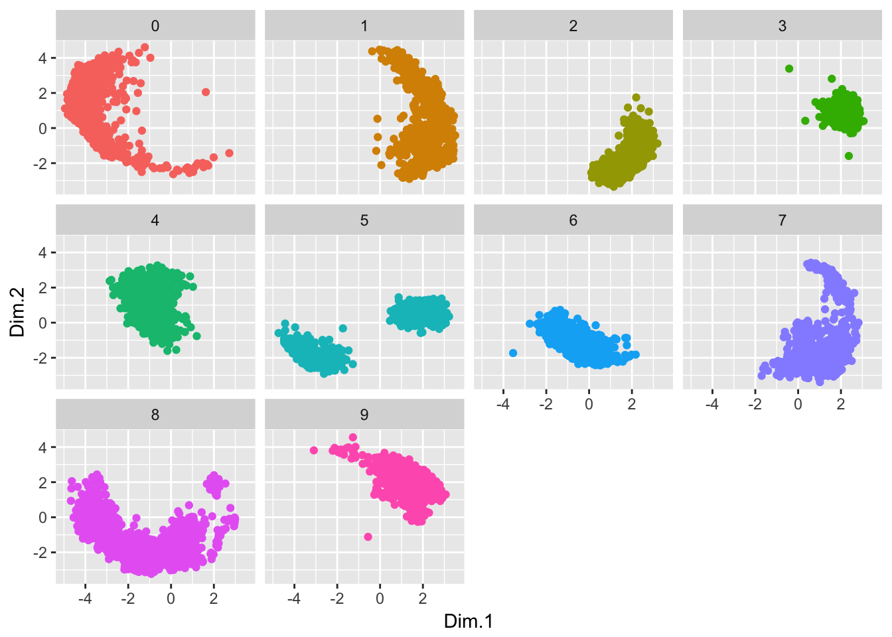
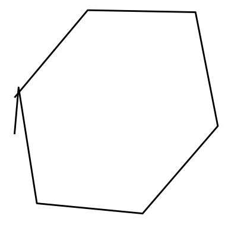

pendigits data - first analysis
Statistical Programming using R
Here are the packages we use in this work.
library(reshape2)
library(ggplot2)
library(FactoMineR)Data files
Download the two following files :
Data description can be found here: each line represent a draw of a digit between 0 and 9, with 8 points (\((x,y)\) coordinates for each point) and the number drawn.
Importation
The data files are here easy to read:
- the names of the attributes are not present
- the values are separated by a comma
","
pen.tra = read.table("donnees/pendigits.tra", sep = ",")
pen.tes = read.table("donnees/pendigits.tes", sep = ",")Now, to collapse them together, we use the following code
pen = rbind(pen.tra, pen.tes)At the end of the import process, we name the attributes according to what we know: the two first attributes are \((x_1, y_1)\), the third and the fourth \((x_2, y_2)\), and so on. The last attribute is the written digit. Then, we create the vector "X1" "Y1" "X2" "Y2" ... "X8" "Y8" "digit".
names(pen) = c(paste0(c("X", "Y"), rep(1:8, each = 2)), "digit")
class(pen$digit)## [1] "integer"digit variable is here a numeric attribute (integer more precisely). But, it is a nominal one in reality. So, we transform it into factor.
pen$digit = factor(pen$digit)
class(pen$digit)## [1] "factor"We now have the following value (only 6 first are presented here).
| X1 | Y1 | X2 | Y2 | X3 | Y3 | X4 | Y4 | X5 | Y5 | X6 | Y6 | X7 | Y7 | X8 | Y8 | digit |
|---|---|---|---|---|---|---|---|---|---|---|---|---|---|---|---|---|
| 47 | 100 | 27 | 81 | 57 | 37 | 26 | 0 | 0 | 23 | 56 | 53 | 100 | 90 | 40 | 98 | 8 |
| 0 | 89 | 27 | 100 | 42 | 75 | 29 | 45 | 15 | 15 | 37 | 0 | 69 | 2 | 100 | 6 | 2 |
| 0 | 57 | 31 | 68 | 72 | 90 | 100 | 100 | 76 | 75 | 50 | 51 | 28 | 25 | 16 | 0 | 1 |
| 0 | 100 | 7 | 92 | 5 | 68 | 19 | 45 | 86 | 34 | 100 | 45 | 74 | 23 | 67 | 0 | 4 |
| 0 | 67 | 49 | 83 | 100 | 100 | 81 | 80 | 60 | 60 | 40 | 40 | 33 | 20 | 47 | 0 | 1 |
| 100 | 100 | 88 | 99 | 49 | 74 | 17 | 47 | 0 | 16 | 37 | 0 | 73 | 16 | 20 | 20 | 6 |
Description
One by one
Our variable of interest is the digit reprensented. So, we start by describe this attribute.
table(pen$digit)##
## 0 1 2 3 4 5 6 7 8 9
## 1143 1143 1144 1055 1144 1055 1056 1142 1055 1055Then, we reprensent the bar chart of the distribution of digits. We add a color by digit, because we use these colors later.
ggplot(pen, aes(digit, fill = digit)) +
geom_bar() +
guides(fill = FALSE)
We present here the mean, the median and the standard deviation of each coordinates.
tab = apply(pen[-17], 2, function(x) {
return (c(Mean = mean(x),
Median = median(x),
StdDev = sd(x)))
})
round(t(tab), 2)## Mean Median StdDev
## X1 38.81 32.0 34.26
## Y1 85.12 89.0 16.22
## X2 40.61 40.0 26.34
## Y2 83.77 91.0 19.16
## X3 49.77 53.0 34.10
## Y3 65.57 71.0 27.00
## X4 51.22 53.5 30.58
## Y4 44.50 43.0 29.91
## X5 56.87 60.0 34.14
## Y5 33.70 33.0 27.25
## X6 60.52 73.0 37.29
## Y6 34.83 30.0 27.12
## X7 55.02 53.0 22.34
## Y7 34.94 27.0 33.16
## X8 47.29 40.0 41.76
## Y8 28.85 9.0 35.78We also represent the distribution of each coordinate by a boxplot. For that, we can do a plot for each one.
for (j in 1:16)
boxplot(pen[,j])But, at the end, it produces 16 graphics, hard to compare. So we can therefore reprensent in one graphic all \(x_j\) distribution, and in other one all \(y_j\) distribution. This operation can be done with the melt() function of the package reshape2, which transform the form of the data. Here the step by step procedure for \(x\) coordinates
pen.X = pen[seq(1, 15, 2)]
names(pen.X)## [1] "X1" "X2" "X3" "X4" "X5" "X6" "X7" "X8"pen.X.melt = melt(pen.X)## No id variables; using all as measure variablesknitr::kable(head(pen.X.melt))| variable | value |
|---|---|
| X1 | 47 |
| X1 | 0 |
| X1 | 0 |
| X1 | 0 |
| X1 | 0 |
| X1 | 100 |
And the boxplots
ggplot(pen.X.melt, aes(variable, value)) +
geom_boxplot()
Now, in one step for \(y\) coordinates
ggplot(melt(pen[seq(2, 16, 2)]), aes(variable, value)) + geom_boxplot()## No id variables; using all as measure variables
With respect to digit
First, we present the mean value of each coordinate for each digit. We can do this step with apply() (and tapply()) or with aggregate().
apply(pen[-17], 2, tapply, pen$digit, mean)agg = aggregate(. ~ digit, pen, mean)knitr::kable(agg, digits = 2)| digit | X1 | Y1 | X2 | Y2 | X3 | Y3 | X4 | Y4 | X5 | Y5 | X6 | Y6 | X7 | Y7 | X8 | Y8 |
|---|---|---|---|---|---|---|---|---|---|---|---|---|---|---|---|---|
| 0 | 35.37 | 86.06 | 11.58 | 58.31 | 14.94 | 19.60 | 51.17 | 7.29 | 85.94 | 31.30 | 89.29 | 68.49 | 59.01 | 89.31 | 22.10 | 75.24 |
| 1 | 14.70 | 61.39 | 44.35 | 77.94 | 69.86 | 89.51 | 77.50 | 79.80 | 67.64 | 54.06 | 47.80 | 32.66 | 44.60 | 16.16 | 59.91 | 1.38 |
| 2 | 18.39 | 76.95 | 42.13 | 99.39 | 67.46 | 79.76 | 51.28 | 46.05 | 19.83 | 19.38 | 11.64 | 9.09 | 53.06 | 5.25 | 98.71 | 4.17 |
| 3 | 24.78 | 84.06 | 56.66 | 99.52 | 86.64 | 84.69 | 64.53 | 60.59 | 82.13 | 43.22 | 90.88 | 17.26 | 50.01 | 2.28 | 3.47 | 6.24 |
| 4 | 42.96 | 99.54 | 22.13 | 79.38 | 5.75 | 51.16 | 42.83 | 40.47 | 85.10 | 49.56 | 86.30 | 59.72 | 70.99 | 31.45 | 62.60 | 0.00 |
| 5 | 41.24 | 90.94 | 42.60 | 75.83 | 57.31 | 59.18 | 36.46 | 29.36 | 26.18 | 33.15 | 37.64 | 50.24 | 42.83 | 57.69 | 59.46 | 60.31 |
| 6 | 87.52 | 98.72 | 51.75 | 86.72 | 20.71 | 58.48 | 6.94 | 26.93 | 32.61 | 3.14 | 81.11 | 11.02 | 61.57 | 30.54 | 11.00 | 23.35 |
| 7 | 3.50 | 91.01 | 45.37 | 98.25 | 78.85 | 80.76 | 71.27 | 47.47 | 52.73 | 14.93 | 33.60 | 18.47 | 39.51 | 33.80 | 81.14 | 34.31 |
| 8 | 56.95 | 82.08 | 39.83 | 79.62 | 51.81 | 51.93 | 50.56 | 24.22 | 35.25 | 17.07 | 39.93 | 36.90 | 67.78 | 68.49 | 49.00 | 81.40 |
| 9 | 69.26 | 81.32 | 52.79 | 83.26 | 45.45 | 81.28 | 56.57 | 82.96 | 79.06 | 71.09 | 89.78 | 43.23 | 61.48 | 14.34 | 18.15 | 4.54 |
For graphical representation, we have to produce a lot of boxplots. The most interesting ones in our case is a set of boxplot of \(x_j\) coordinate for each digit (8 sets of 10 boxplots), and the same for each \(y_j\). This can be done due to the melt() function.
pen.melt = melt(pen, id.vars = 17)
head(pen.melt)## digit variable value
## 1 8 X1 47
## 2 2 X1 0
## 3 1 X1 0
## 4 4 X1 0
## 5 1 X1 0
## 6 6 X1 100And now the production of graphic.
ggplot(pen.melt, aes(digit, value, color = digit)) +
geom_boxplot() +
facet_wrap(~ variable)
To go further, we can try to do a heatmap of \((x_j,y_j)\) coordinates for each digit. But, it produces 8 heatmaps per digit. 80 graphics can be very too many to be usefull in this way of working. We will see later how we can take advantage of interactive possibility in R in data analysis.
Representation of a digit
We want to represent the first "0" drawn. This step is interesting for further analysis. We select the first 0 digit, and extract \(x\) and \(y\) coordinates. After we plot these with a line, and add the number of the point.
first.0 = subset(pen, digit == 0)[1,]
x = unlist(first.0[seq(1,15, by = 2)])
y = unlist(first.0[seq(2,16, by = 2)])
par(mar = c(0, 0, 0, 0) + .1)
plot(x, y, type = "b", pch = " ", axes = FALSE, col = "gray70")
text(x, y, 1:8)
Function
Now, we have the basis of a function that can reproduc each digit. We want the following constraints for this one :
- Parameters:
v: a vector with the 16 values of each point (if it is adata.frame, transform it as simple vector)n: a numeric value (withNULLvalue by default), denoting the number to drawn (possibly not pass)point: a boolean vector (withFALSEvalue by default), indicating if the point number has to be added to the graphadd: a boolean vector (withFALSEvalue by default), indicating if the plot is to added to the previous onecolor: a specific color (with"black"value by default)
- Output:
- line representing the drawn
- number drawn as title (if known)
- point number (if wanted)
Here is the final function.
drawn <- function(v, n = NULL, point = FALSE, add = FALSE, color = "black") {
# Transformation of the data.frame if needed
if (is.data.frame(v))
v = unlist(v)
# extract x and y coordinates
x = v[seq(1, 15, by = 2)]
y = v[seq(2, 16, by = 2)]
# optimize space into graphics in reducing margin (sse ?par for more information)
opar = par(mar = c(0, 0, 2, 0) + .1)
if (!add) { # Create a graphic
plot(x, y,
# Specify limits is a way to have always the same frame for plotting lines
xlim = c(-5, 105), ylim = c(-5, 105),
# Do not show axes
axes = FALSE,
# If point is TRUE, we add a space (with pch = " ") at each point
# If not, draw a line
type = ifelse(point, "b", "l"),
pch = " ",
# Specify color (black by default)
col = color,
# Add a title (NULL by default)
main = n)
if (point) text(x, y, 1:8)
} else { # Add line to the plot
# lines() add lines to an existing plot (the last produce)
lines(x, y,
# same comment than before
xlim = c(-5, 105), ylim = c(-5, 105),
type = ifelse(point, "b", "l"),
pch = " ",
col = color)
}
par(opar)
}Now, here some use of this function
drawn(first.0)
drawn(first.0, n = 0)
drawn(first.0, point = TRUE)
drawn(first.0)
first.1 = subset(pen, digit == 1)[1,]
drawn(first.1, add = TRUE, col = "red")
First drawn of each digit
For our curiosity, we can now drawn each first digit of the data. The mfrow parameter of the par() function permits us to separate the graphical window into 10 cells (with 2 rows and 5 columns).
par(mfrow = c(2, 5))
for (i in 0:9) {
s = subset(pen, digit == i)[1,]
drawn(s[-16], n = i)
}
Average digit
From the previous section, we now want to represent the average digit, i.e. a line produce by the average value for each coordinate. To see if there are some area that are not use for a particular digit, we represent also all the drawn in a very light gray.
par(mfrow = c(2, 5))
for (i in 0:9) {
s = subset(pen, digit == i)
# Computing the average values
mean = apply(s[-17], 2, mean)
# Drawn the first drawn
drawn(s[1,1:16], col = "gray90", n = i)
# Add all other drawn
for (j in 2:nrow(s))
drawn(s[j,1:16], col = "gray90", add = TRUE)
# Last, add the average line
drawn(mean[-17], add = TRUE)
}
PCA
A good way to represent many variables in one plot is the Principal Component Analysis. Then, we perform PCA on the data, and look at the quality of the projection on the first components.
res = PCA(pen, quali.sup = 17, graph = FALSE)
eig = data.frame(comp = 1:16,
setNames(res$eig, c("eigenvalue", "percent", "cum.percent")))
ggplot(eig) +
geom_bar(aes(comp, percent), stat = "identity") +
stat_summary(aes(comp, cum.percent, group = 1),
fun.y = sum, geom = "line")
Now, we plot the first plan with a specific color for each digit. For that, we have to add the digit variable to the coordinates data.frame produce by PCA().
res2 = data.frame(res$ind$coord, digit = pen$digit)
ggplot(res2, aes(Dim.1, Dim.2, color = digit)) +
geom_point()
For each digit
The above plot is hard to understand. So, we choose to represent each digit separately, to have a better idea on how digit are spread (or not) in the PCA projection.
ggplot(res2, aes(Dim.1, Dim.2, color = digit)) +
geom_point() +
facet_wrap(~ digit) +
guides(color = FALSE)
We conclude here that we surely need to clusters data separatly for each digit, to detect if there really are different ways to write a digit (and how).
Point representation with ggplot()
We can also represent digit drawn with the ggplot() function. We have to use the melt() function, and to be careful on how we do this.
For the first 0
f0 = data.frame(x = unlist(first.0[seq(1, 15, 2)]),
y = unlist(first.0[seq(2, 16, 2)]))
ggplot(f0, aes(x, y)) +
geom_path() +
theme_void()
For the average digit, and all drawn.
Construct the data for all drawn
pen$id = 1:nrow(pen)
pen.melt = melt(pen, id.vars = c("id", "digit"))
pen.melt$coord = substr(pen.melt$variable, 1, 1)
pen.melt$point = substr(pen.melt$variable, 2, 2)
pen.melt.X = subset(pen.melt, coord == "X", -c(variable, coord))
names(pen.melt.X) = c("id", "digit", "x", "point")
pen.melt.Y = subset(pen.melt, coord == "Y", -c(variable, coord))
names(pen.melt.Y) = c("id", "digit", "y", "point")
pen.merge = merge(pen.melt.X, pen.melt.Y)Construct the data for average
agg.melt = melt(agg, id.vars = "digit")
agg.melt$coord = substr(agg.melt$variable, 1, 1)
agg.melt$point = substr(agg.melt$variable, 2, 2)
agg.melt.X = subset(agg.melt, coord == "X", -c(variable, coord))
names(agg.melt.X) = c("digit", "x", "point")
agg.melt.Y = subset(agg.melt, coord == "Y", -c(variable, coord))
names(agg.melt.Y) = c("digit", "y", "point")
agg.merge = merge(agg.melt.X, agg.melt.Y)Plot it
ggplot(pen.merge, aes(x, y)) +
geom_path(aes(group = id), color = "gray90") +
facet_wrap(~ digit) +
geom_path(data = agg.merge) +
theme_void()